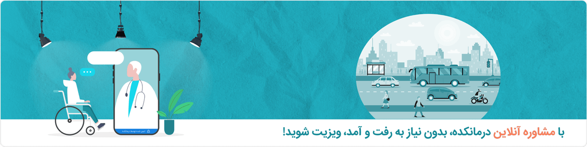
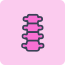

لیست تخصص ها
گوارش، کبد و آندوسکپی
غدد و متابولیسم
گوش، حلق وبینی
مغز و اعصاب
خون و آنکولوژی
زنان و زایمان
پوست و مو
روماتولوژی
جراحی مغز و اعصاب
وانپزشکی، اعصاب و روان
اورتپدی
سایر تخصص ها
مشاوره آنلاین
روانشناس
زنان، زایمان و نازایی
غدد و متابولیسم
گوارش، کبد و آندوسکپی
کودکان
مشاهده آنلاین فوری
روانپزشک(اعصاب و روان)
بیماری های عفونی و تب دار
پوست و مو
کلیه و مجاری ادراری (اورولوژی)
گوش، حلق وبینی
مشاهده همه
مجله پزشکی
عضویت پزشکان
کرونا سازمانی
لیست تخصص ها
مشاوره آنلاین
مجله پزشکی
عضویت پزشکان
کرونا سازمانی
ورود

همه تخصص ها
(به ترتیب حروف الفبا)
ا
ارتوپدی
ارتوپدی کودکان
ارتوز و پروتز(ارتوپدی فنی)
استروتاکسی و فانکشنال مغز و اعصاب
ب
بالون آنژیوپلاستی
بالون آنژیوپلاستی و والوپلاستی
بیماری های عفونی و تب دار
بیماریهای پوست و مو
پ
پوست و مو
پیوند کلیه
ت
تعویض مفاصل و آرتروسکوپی
تغذیه
توانبخشی شناختی
توراکس
اسکرول کنید
گوارش و کبد
متخصص گوارش، کبد و آندوسکوپی پزشکی که بر سلامت گوارش تمرکز دارد و در زمینه تشخیص، ارزیابی و درمان اختلالا
+109 پزشک
مشاهده
چشم
متخصص غدد و متابولیسم پزشکی است که بیماریهای هورمونی را به طور کامل مطالعه کرده و بهترین درمانهای ممکن ...
+109 پزشک
مشاهده
گوش، حلق و بینی
پزشکی که در زمینه تشخیص، مراقبتهای پزشکی، جراحی و درمان بیمارانی که دچار اختلالات گوش، بینی، دهان، گلو، ...
+109 پزشک
مشاهده
مغز و اعصاب
متخصص گوارش، کبد و آندوسکوپی پزشکی که بر سلامت گوارش تمرکز دارد و در زمینه تشخیص، ارزیابی و درمان اختلالا
+109 پزشک
مشاهده
خون و آنکولوژی
متخصص غدد و متابولیسم پزشکی است که بیماریهای هورمونی را به طور کامل مطالعه کرده و بهترین درمانهای ممکن ...
+109 پزشک
مشاهده
زنان و زایمان
پزشکی که در زمینه تشخیص، مراقبتهای پزشکی، جراحی و درمان بیمارانی که دچار اختلالات گوش، بینی، دهان، گلو، ...
+109 پزشک
مشاهده
پوست و مو
متخصص گوارش، کبد و آندوسکوپی پزشکی که بر سلامت گوارش تمرکز دارد و در زمینه تشخیص، ارزیابی و درمان اختلالا
+109 پزشک
مشاهده

روماتولوژی
متخصص غدد و متابولیسم پزشکی است که بیماریهای هورمونی را به طور کامل مطالعه کرده و بهترین درمانهای ممکن ...
+109 پزشک
مشاهده
جراحی مغز
پزشکی که در زمینه تشخیص، مراقبتهای پزشکی، جراحی و درمان بیمارانی که دچار اختلالات گوش، بینی، دهان، گلو، ...
+109 پزشک
مشاهده